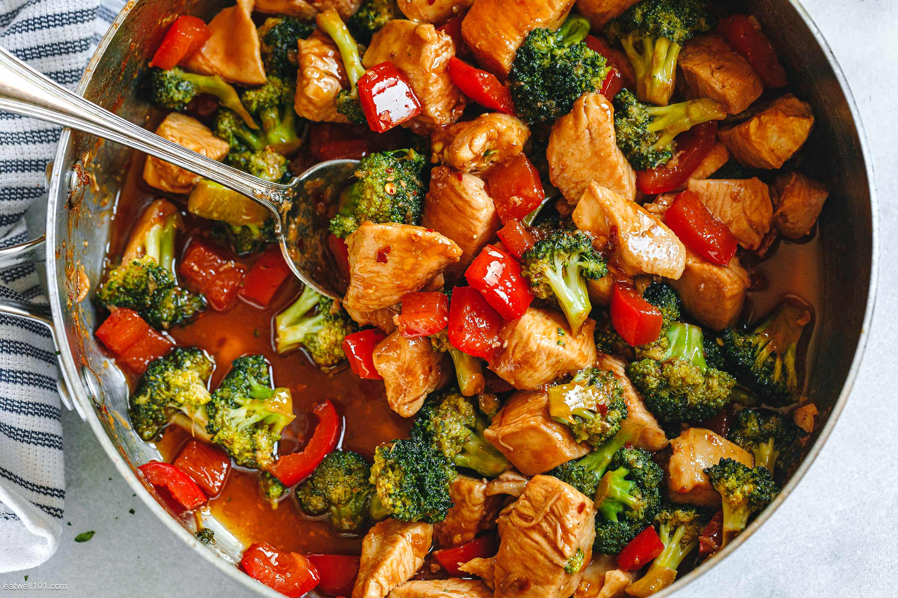

Chicken & Broccoli Stir-Fry

This tasty stir-fry is a healthy weeknight treat. It fuses the flavours of Thailand into easy-to-procure Western ingredients to make for an easy and comfortable cook.
Ingredients
- half a cup of Basmati rice
- 4 chicken thighs, de-boned and chopped into chunks
- 100g oyster mushrooms
- an onion
- 2 carrots, julienned
- red pepper, sliced
- 4 cups broccoli florets
- 2 teaspoons garlic
- 2 teaspoons ginger
- can of coconut milk
- sesame seeds (optional)
Chicken Marinade
- 30ml soy sauce
- 30ml sesame oil
- teaspoon brown sugar
- 2 teaspoons yoghurt
- 2 teaspoons Siracha sauce
- 2 teaspoons garlic
- 2 teaspoons ginger
- 1/2 teaspoon black pepper
Stir-fry broth
- tablespoon chicken stock
- 4 tablespoons soy sauce
- 3 tablespoons dry sherry
- 1 teaspoon cornstarch